Français
Français
✨ Bienvenue dans l'univers fascinant de Sword Art Online ✨
🌠Entrez dans un univers où l'aventure ne connaît aucune limite ! Laissez-vous transporter à travers des paysages époustouflants, des forêts mystérieuses d’Aincrad 🌲 jusqu'aux cieux enchanteurs d’Alfheim Online 🧚‍♂️. Chaque environnement est conçu pour émerveiller, où magie et fantastique se rencontrent pour créer des mondes inoubliables. Mystères et dangers n'attendent que vous 🌟.
👥 Rencontrez des personnages mémorables, qui marqueront votre épopée. Chacun porte une histoire unique, avec ses rêves, ses peurs et ses espoirs ❤️. Du courageux Kirito à l’intrépide Asuna, chaque rencontre ajoute une profondeur à cette aventure. Vous serez entouré d’alliés loyaux et d’adversaires redoutables, chacun jouant un rôle crucial dans votre quête 🛡️.
⚔️ Vivez des aventures épiques où chaque décision peut changer le cours de votre destin âš¡. Dans l’univers de Sword Art Online, chaque quête est une épreuve de courage et de stratégie. Chaque étage d’Aincrad est un champ de bataille où les combats contre des boss colossaux 🉠mettent à l’épreuve votre valeur. Résolvez des énigmes 🧩, affrontez des donjons mystérieux 💥 et découvrez un univers de défis !
🔮 Explorez des mondes fascinants, riches en magie et technologie futuriste. Dans Sword Art Online, la réalité virtuelle devient une aventure infinie. Découvrez les secrets d’Alfheim Online 🧚‍♀️, où les elfes maîtrisent le vol et la magie ✨, ou plongez dans les tactiques intenses de Gun Gale Online où chaque tir compte 🔫. Ces mondes sont remplis de merveilles et de dangers cachés qui ne demandent qu’à être explorés.
🌟 Au-delà de l’aventure, Sword Art Online est une histoire d'amitié, de courage et de découverte de soi. Même dans un monde virtuel, les liens créés sont puissants et réels ❤️. Chaque décision, chaque amitié, et chaque épreuve que vous surmontez façonnera votre propre légende ✨.
âš¡ Préparez-vous à une aventure inoubliable ! Que vous soyez ici pour explorer, combattre ou simplement vous émerveiller, Sword Art Online vous promet une expérience immersive pleine d’émotions, de mystères et de découvertes sans fin ğŸŒğŸ®.
Personnages
Aincrad Arc
Kirito (Kazuto Kirigaya)

Asuna Yuuki

Klein (Ryotaro Tsuboi)

Agil (Andrew Gilbert Mills)
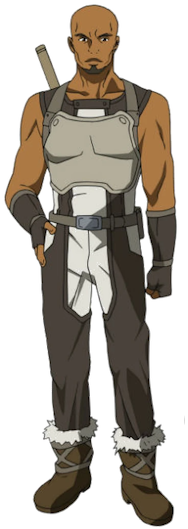Silica (Keiko Ayano)

Lisbeth (Rika Shinozaki)

Yui
Sachi

Diavel
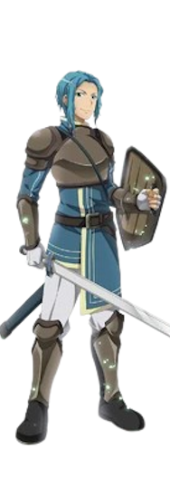Kuradeel
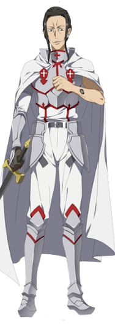Kibaou
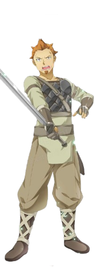Heathcliff (Akihiko Kayaba)
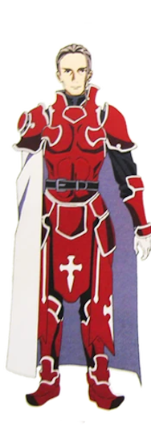Argo

Thinker

Yulier
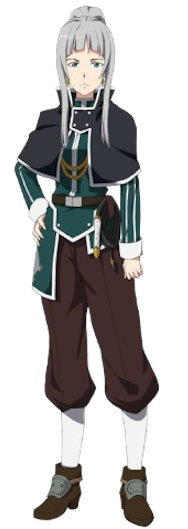Johnny Black

PoH (Prince of Hell)
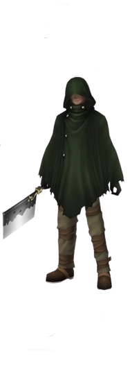Grimlock
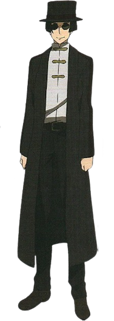Yolko
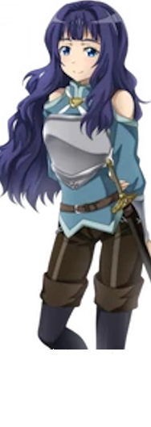Fairy Dance Arc (Alfheim Online)
Leafa (Suguha Kirigaya)
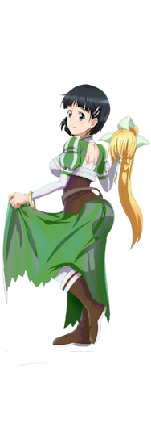Oberon (Nobuyuki Sugou)

Recon (Shinichi Nagata)
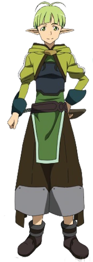Eugene

Sakuya
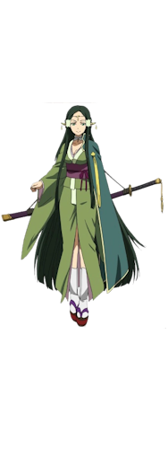Alicia Rue

Tonky

Phantom Bullet Arc (Gun Gale Online)
Sinon (Shino Asada)

Death Gun (Sterben)

Shinkawa Kyouji

Yamikaze
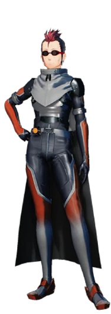Pale Rider

Sterben (Shouichi Shinkawa)
.png)
Dyne
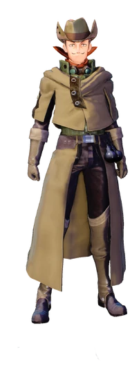Mother's Rosario Arc
Yuuki Konno

Siune

Jun
Tecchi
Nori

Talken

Alicization Arc
Eugeo
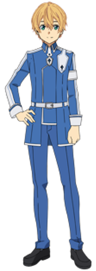Alice Zuberg

Quinella (Administrator)
.png)
Cardinal

Bercouli Synthesis One

Fanatio Synthesis Two

Deusolbert Synthesis Seven

Eldrie Synthesis Thirty-One

Chudelkin
Sortiliena Serlut

Ronye Arabel

Tiese Shtolienen

Humbert Zizek

Raios Antinous

Lipia Zancale

Shasta

Ishkan

Lilpilin

War of Underworld Arc
Gabriel Miller (Subtilizer)
.png)
Vassago Casals

Critter

Iskahn
Sheyta
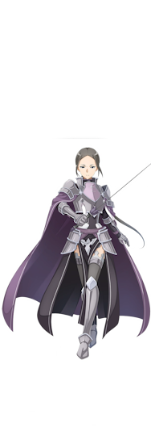Renly Synthesis Twenty-Seven

Yanai

Personnages des jeux vidéo
Strea
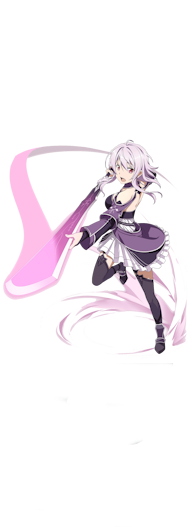Philia
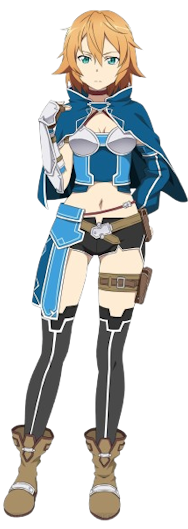Rain

Seven (Professor Nanairo)
.png)
Eiji Nochizawa (Nautilus)
.png)
Yuna (Yuuna Shigemura)
.png)
Tia
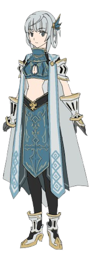Premiere
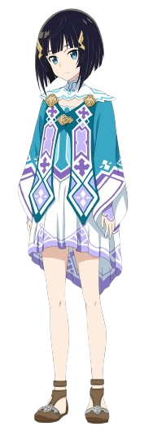Kureha

Zeliska

Itsuki
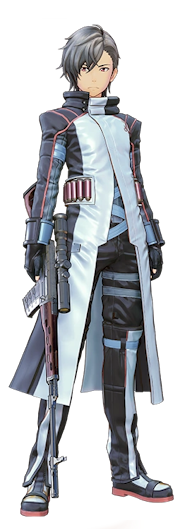Bazalt Joe

Nom du Personnage
✨ Le Monde de SAO ✨
ğŸŒğŸ® Le monde de Sword Art Online (SAO) est un univers virtuel captivant où les joueurs interagissent dans des environnements numériques fascinants grâce à une technologie de réalité virtuelle avancée. Plongez dans cet univers où chaque détail est conçu pour vous immerger complètement.
L'aventure débute dans Aincrad, une imposante tour de 100 étages, où chaque niveau dévoile un monde unique, rempli de défis et de merveilles. Des forêts luxuriantes 🌲 aux montagnes enneigées 🏔️, en passant par des cités médiévales 🰠et des donjons dangereux remplis de créatures redoutables 🐉, Aincrad est un monde où la coopération est la clé. Les joueurs doivent s’allier 🤠pour vaincre les puissants boss et accéder aux étages suivants. Chaque étape franchie vous rapproche de la liberté. 🏰🌲🗡️
Dans Alfheim Online (ALO), l’exploration prend un autre visage avec un univers féerique où les joueurs peuvent voler 🧚‍♂️ grâce à des ailes propres à chaque race d'elfes. ALO met l’accent sur la liberté et la magie ✨, avec des paysages aériens enchanteurs, des forêts mystiques 🌳, des forteresses flottantes 🰠et des royaumes divisés en factions. Un monde où l’imaginaire prend son envol. 🧚‍♂️🌌✨
Gun Gale Online (GGO) change complètement d'atmosphère avec un univers post-apocalyptique 🌆 dominé par les armes à feu 🔫. Dans ce monde, les paysages arides 🏜️, les cités en ruines 🏙️ et les champs de bataille stratégiques offrent une expérience tendue et compétitive. Ici, chaque tir et chaque décision compte. 🏜️🔫💥
Enfin, l'univers de SAO s'étend avec des mondes comme Underworld, une réalité virtuelle avancée 🧠où les personnages possèdent une conscience propre. Dans cet univers, le temps et l’espace â³ fonctionnent selon des règles inhabituelles, créant une expérience profonde et unique. Chaque monde de SAO est conçu pour être vaste ğŸŒ, riche en détails, et rempli d’aventures à découvrir. 🌐🕰️🌟
🨠Créateur de Sword Art Online ğŸ¨

🖋️ Kawahara a débuté Sword Art Online en 2002 sous forme de light novel, un type de roman populaire au Japon, souvent illustré et destiné aux jeunes adultes. Ce qui a commencé comme un projet personnel a rapidement captivé un large public grâce à une intrigue complexe et des personnages profondément attachants. 🌟📚
🌠L'univers de Sword Art Online est une fusion unique entre la réalité virtuelle et les aventures épiques, où les joueurs sont plongés dans des mondes immersifs. Kawahara a su rendre ces mondes vibrants, peuplés de paysages fascinants et de défis émotionnels, tout en explorant des thèmes profonds comme la survie, la liberté et la quête de soi. 💡🕹️🌲
🎞️ La série a ensuite été adaptée en manga, anime, et jeux vidéo, propulsant Kawahara sur la scène internationale. L’anime Sword Art Online, diffusé en 2012, a joué un rôle clé dans cette ascension mondiale, grâce à ses visuels époustouflants et sa bande sonore épique. 🎥📀🎶
❤️ Ce qui distingue Reki Kawahara, c'est sa capacité à allier la science-fiction futuriste à des thèmes émotionnels puissants comme l'amitié, l'amour et la perte. Il explore également les limites entre le virtuel et le réel, questionnant les dangers potentiels d'une immersion totale dans des mondes fictifs. 🧑‍🤝‍🧑💕🌌
🆠En reconnaissance de son influence majeure dans l’industrie, Kawahara a reçu de nombreux prix littéraires. Son travail continue d’inspirer des générations de créateurs et de fans à travers le monde. 🌟✍️
✨ Informations Complémentaires ✨
*Sword Art Online (SAO)* est bien plus qu'une simple série sur les jeux vidéo 🎮. Elle plonge au cœur de thèmes profonds comme la réalité, la technologie, et les relations humaines 🤝. À travers ses différents arcs, SAO explore des questions existentielles tout en offrant une aventure immersive pleine de mystères et d'émotions 💫.
Le concept de réalité virtuelle dans SAO nous invite à réfléchir sur la frontière floue entre le monde réel 🌠et les mondes numériques ğŸŒ. Les joueurs, plongés dans des environnements virtuels hyperréalistes, doivent non seulement survivre physiquement, mais aussi faire face aux défis mentaux et émotionnels 💥. Cela soulève des questions fascinantes : Que se passe-t-il lorsque la réalité et la fiction se mélangent ? ğŸ§
De plus, Sword Art Online explore la psychologie des joueurs 🧘‍♂️, notamment la manière dont les interactions en ligne influencent les dynamismes sociaux et les comportements 💬. Chaque joueur, qu'il soit héros ou antagoniste, est confronté à des dilemmes moraux et des choix révélant leur véritable personnalité 💡. Le jeu en ligne devient un miroir de la société, où se mêlent compétition, coopération, amitié et trahison 👫.
Un autre thème récurrent est celui de la solitude 🥀, que l'on retrouve à travers le parcours de Kirito, souvent isolé dans sa quête pour protéger ceux qu'il aime. Mais au fil de l'histoire, des liens profonds se forment et l'amitié devient une force puissante pour surmonter les épreuves 🌟. Ces relations ne se limitent pas aux joueurs humains : des IA comme Yui 🧑‍💻 et d'autres créatures virtuelles jouent également un rôle essentiel dans cet univers.
Enfin, SAO montre que les jeux vidéo ne sont pas qu'un simple divertissement 🎮. Ils peuvent devenir des mondes vivants 🌌 où les joueurs créent des expériences significatives, apprennent des leçons sur eux-mêmes et sur les autres, et explorent de nouveaux horizons. Les aventures vécues dans SAO rappellent que, même dans un monde fictif, les émotions et les relations sont bien réelles ❤️.
Technologie et innovations : SAO anticipe également l'avenir des technologies immersives 🔮, en abordant des sujets comme la réalité augmentée et la réalité virtuelle avancée. Le NerveGear, l'appareil utilisé par les joueurs pour plonger dans les mondes de SAO, nous fait rêver d'un futur où la frontière entre le réel et le virtuel disparaît presque totalement 💻🕶️. Mais il nous met aussi en garde contre les risques d'une trop grande dépendance à ces technologies, soulignant l'importance de rester ancrés dans le monde réel ğŸŒ.
Avec des combats épiques ⚔️, des amitiés inoubliables 🤗, des dilemmes moraux profonds 🧠et des technologies futuristes 🔥, Sword Art Online est un véritable voyage à travers le temps, l'espace et l'âme humaine. Chaque aventure est un rappel que, même dans un jeu, la quête du bonheur, de la liberté et de la connexion est universelle 🌟💫.